Chương I — Cổ (Neck)
I. Cổ
GẬP CỔ
Nằm Ngửa và Nằm Sấp
Nhà trị liệu nâng và đỡ đầu cách bàn 3–4 inch. Nếu khách hàng có thể tự giữ đầu mình, hãy áp lực nhẹ xuống dưới trên trán trong khi khách hàng chống lại hướng lên. Theo dõi việc nín thở, đẩy cằm lên, hoặc cố gắng cuộn bụng để hoàn thành chuyển động.
Cơ chính: Cổ
Cơ đối kháng: Cơ duỗi cổ
Cơ hiệp đồng: SCM, cơ dài cổ, cơ bụng, cơ gập hông
Nhẹ nhàng nâng đầu trong khi khách hàng ấn xuống.


2 Liệu Pháp Thần Kinh – Cơ
CƠ ỨC – ĐÒN – CHŨM
MỘT BÊN (SCM)
Điểm bám SCM: Đỉnh xương ức, phần trong của xương đòn, và mỏm chũm
Tác dụng: Gập và xoay cổ
Cơ chính: Cổ
Cơ đối kháng: Cơ duỗi cổ
Cơ hiệp đồng: Cơ bụng, cơ thắt lưng lớn, cơ gập hông
CƠ DÀI CỔ
Điểm bám cơ dài cổ: C1 và C2 trước và C3–C7 trước
Tác dụng: Gập cổ
Cơ chính: Cổ
Cơ đối kháng: Cơ duỗi cổ
Cơ hiệp đồng: Cơ bụng, cơ thắt lưng lớn, cơ gập hông
Bài kiểm tra này giống như bài kiểm tra SCM hai bên, với đầu khách hàng xoay 45° sang một bên.
Áp lực được áp lên bên trán phía trên lông mày. Cẩn thận không ấn quá mạnh!
Đỡ đầu khách hàng cách bàn một hoặc hai inch bằng một tay. Yêu cầu khách hàng giữ đầu gật về trước, cằm thu vào, trong khi bạn nhẹ nhàng cố đẩy trán ra sau, như thể để hủy bỏ cúi đầu. Theo dõi việc khách hàng cố nâng cằm để chống lại (dùng SCM chứ không phải cơ dài cổ).
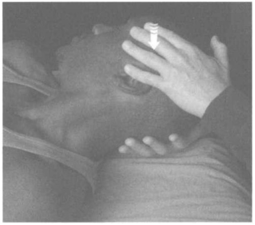
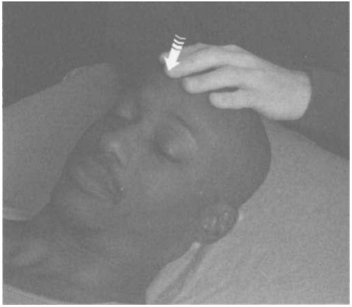
CƠ BẬC THANG GIỮA
Điểm bám: C3–C7 và các xương sườn trước #1–2
Tác dụng: Gập cổ và gập bên
Cơ chính: Cổ
Cơ đối kháng: Cơ duỗi cổ, cơ nâng bả vai
Cơ hiệp đồng: Cơ bụng, cơ thắt lưng lớn, cơ delta, cơ tam đầu, cơ cánh tay – quay, cơ duỗi cổ tay, cơ duỗi ngón cái
CƠ BẬC THANG TRƯỚC
Điểm bám: Giống như cơ bậc thang giữa (ở trên)
Tác dụng: Gập cổ và gập bên
Cơ chính: Cổ
Cơ đối kháng: Cơ duỗi cổ, cơ nâng bả vai
Cơ hiệp đồng: Cơ bụng, cơ thắt lưng lớn, cơ delta, cơ tam đầu, cơ cánh tay – quay, cơ duỗi cổ tay, cơ duỗi ngón cái
Cổ 3
Chống lại ở thái dương trong khi khách hàng hướng đầu về vai.
Chống lại phía trên lông mày trong khi khách hàng hướng đầu về phía vai.
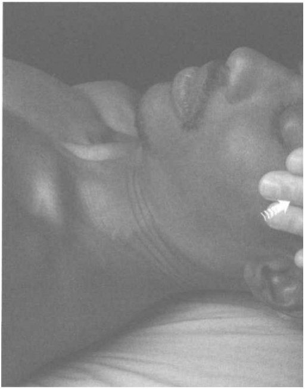
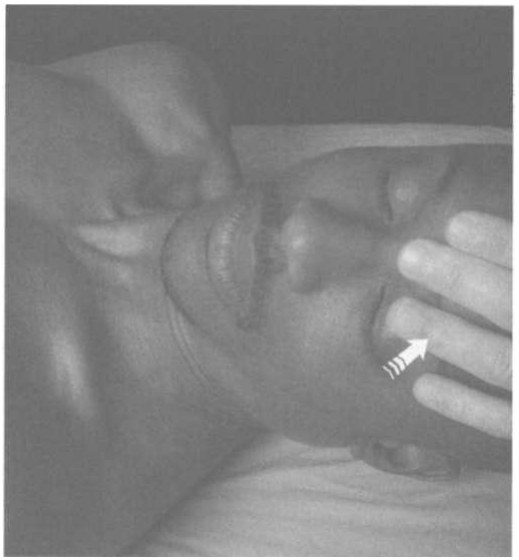
4 Liệu Pháp Thần Kinh – Cơ
DUỖI CỔ
HAI BÊN
Nằm Ngửa và Nằm Sấp
Cơ chính: Cổ
Cơ đối kháng: Cơ gập cổ
Cơ hiệp đồng: Cơ dựng cột sống ngực, cơ dựng cột sống thắt lưng, cơ mông lớn hai bên
Với đầu khách hàng phẳng trên bàn, chống lại chuyển động duỗi cổ. Bài này kiểm tra các cơ duỗi cổ dưới.
Nâng đầu khách hàng vài inch khỏi bàn và chống lại chuyển động duỗi cổ. Bài này kiểm tra các cơ duỗi cổ trên.
Chống lại duỗi cổ (cho thấy toàn bộ chiều dài của các cơ duỗi cổ). Nếu đầu được nâng khỏi bàn, bài này kiểm tra sự duỗi ngực.

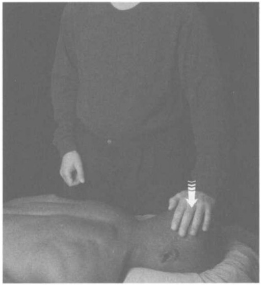

DUỖI CỔ
MỘT BÊN
Nằm Ngửa và Nằm Sấp
Xoay đầu hoàn toàn và chống lại chuyển động duỗi. Tư thế nằm sấp cho thấy toàn bộ chiều dài của các cơ duỗi lưng ở một bên.
XOAY CỘT SỐNG
CỔ
Nằm Ngửa
Cơ chính: Cổ
Cơ đối kháng: Xoay ngược chiều
Cơ hiệp đồng: Ngực đối bên, xoay thắt lưng cùng bên
Cổ 5
Cơ chính: Cổ
Cơ đối kháng: SCM
Cơ hiệp đồng: Cơ dựng cột sống ngực, cơ dựng cột sống thắt lưng, cơ mông lớn một bên
Chống lại phía trên tai trong khi khách hàng xoay đầu.

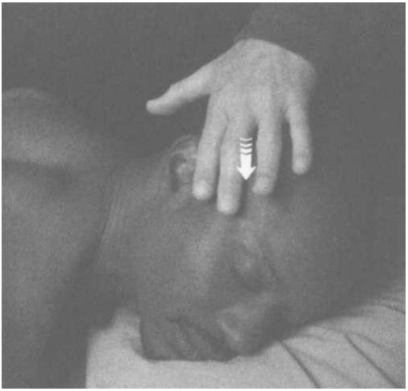
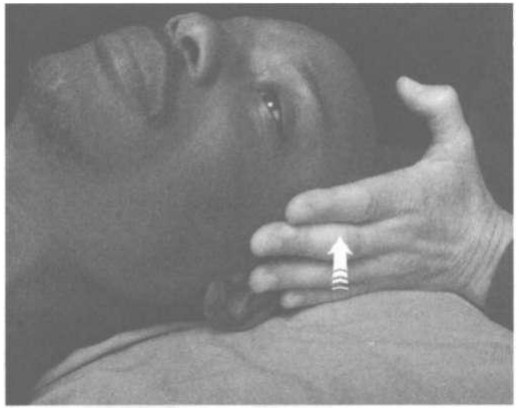
6 Liệu Pháp Thần Kinh – Cơ
CƠ THANG TRÊN
Nằm Ngửa và Nằm Sấp
Điểm bám: Xương chẩm, C1–C7 và phần ngoài của xương đòn, mỏm cùng vai
Tác dụng: Nâng và xoay lên của bả vai
Đầu thẳng. Chống lại gập bên cổ phía trên tai đồng thời chống lại sự nâng vai.
Cơ chính: Ngực trên, cổ
Cơ đối kháng: Cơ lưng rộng (Latissimus dorsi), cơ thang dưới
Cơ hiệp đồng: Cơ xiên, cơ vuông thắt lưng, cơ mông vừa, cơ căng mạc đùi

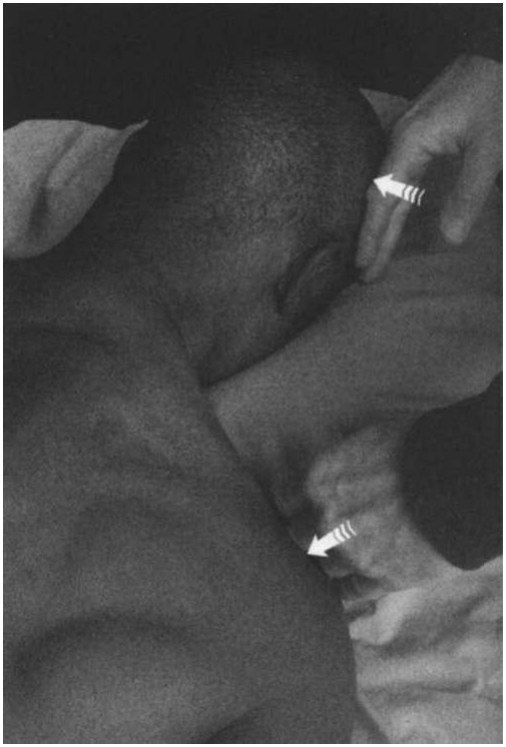
Hoạt Động Của Nhóm Cơ Vùng Cổ
CƠ GẬP CỔ
1. Điểm bám xương ức của SCM 2. Điểm bám xương đòn của SCM 3. Cơ bậc thang – A. Trước; B. Giữa;
C. Sau 4. Cơ dài cổ
Cổ 7
3A
3B
3C

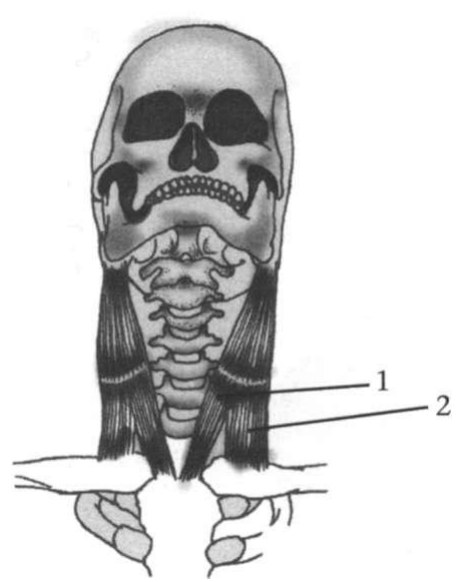

8 Liệu Pháp Thần Kinh – Cơ
CƠ DUỖI CỔ
1. Cơ lách đầu (Splenius capitis) 2. Cơ lách cổ (Splenius cervicis) 3. Cơ thang trên
Cơ dựng cột sống – xem Cơ duỗi thân trong tài liệu tham khảo giải phẫu ("Hoạt Động
Của Nhóm Cơ") ở cuối Chương III.
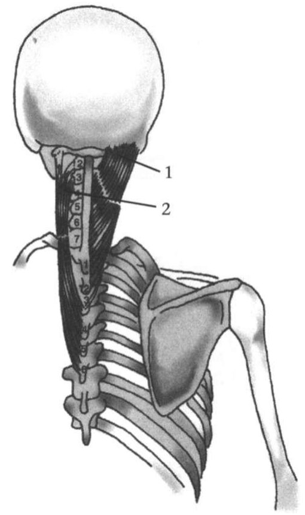
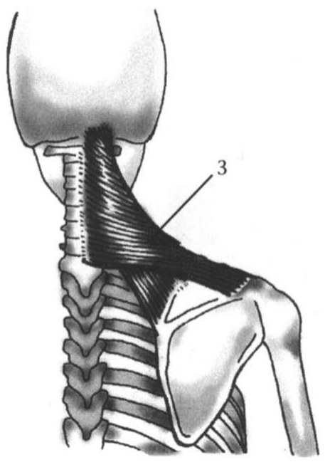